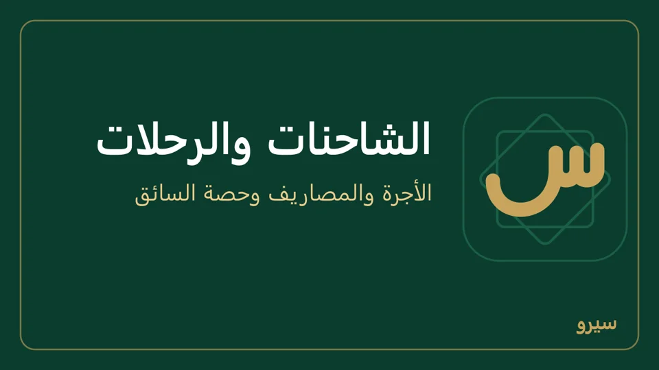
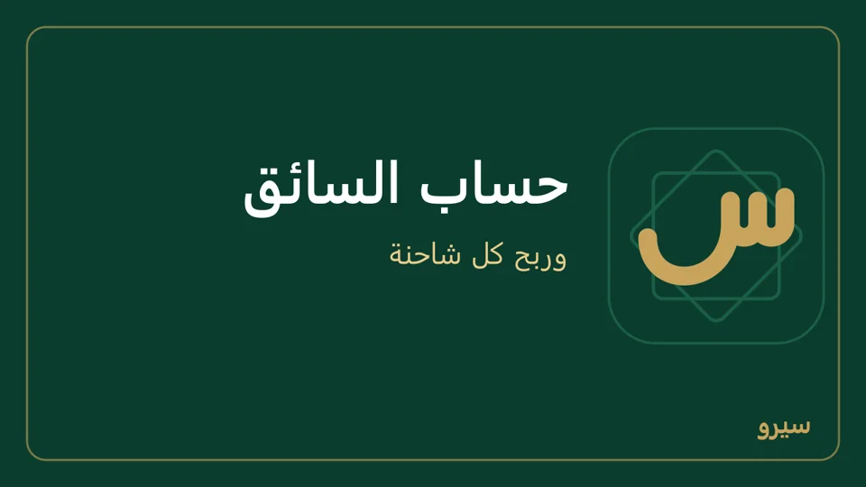

النقل والأسطول
لشركات النقل والشحن: كل رحلة تُفتح بأجرتها، تُسجَّل مصاريفها على الطريق، وعند إغلاقها تصدر فاتورة الأجرة على العميل وتُحسب حصة السائق وحدها. على الكمبيوتر في النقل والأسطول، وعلى الجوال في البلاطة نفسها. فعّلها من الأقسام، أو اختر قالب نقل وشحن / أسطول شاحنات عند التثبيت.
- الشاحنات والسائقون
- رحلة: فتحها ومصاريفها وإغلاقها
- حساب السائق: سلف ومستحقات
- طباعة ورقة الرحلة وكشف حساب السائق
- ربح كل شاحنة
- مشرفون في أماكن متعددة
الشاحنات والسائقون
- في السائقون اكتب اسم السائق وهاتفه، ونسبة الداخلي % ونسبة الخارجي %، واضغط إضافة سائق.
- في الشاحنات اكتب رقم الشاحنة واختر سائقها المعتاد، واضغط إضافة شاحنة.
النسبة من صافي الرحلة: أجرة النقل ناقص مصاريف الرحلة. تغيير النسبة من صفحة السائق (حفظ النسب) يسري على الرحلات التي تُغلق بعده.
على الجوال: في النقل والأسطول: السائقون ← سائق جديد ثم إضافة سائق، والشاحنات ← شاحنة جديدة: رقم الشاحنة وسائقها (اختياري) ثم إضافة شاحنة.
رحلة: فتحها ومصاريفها وإغلاقها
- في رحلة جديدة اختر الشاحنة والسائق والعميل، واكتب من وإلى وأجرة النقل، واختر داخلي أو خارجي (وللخارجي العملة، كالدولار). اضغط فتح الرحلة.
- كل مصروف على الطريق: إضافة مصروف بنوعه ومبلغه، ودُفع من الصندوق أو دفعها السائق (تُخصم مما معه من سُلف). مصروف خاطئ: اكتب سبب الإلغاء بجانبه واضغط إلغاء، فيُعكس قيده ويبقى ظاهراً مشطوباً، ويُكتب الإلغاء وسببه في سجل التدقيق.
- حين تنتهي: إغلاق وإصدار الفاتورة. تصدر فاتورة بيع بالأجرة على العميل، وتُقيَّد حصة السائق. لرحلة بنسبة مختلفة اكتبها في نسبة السائق لهذه الرحلة %. قبل الإغلاق يظهر «فاتورة على العميل …» و«حصة السائق …» و«ربح الرحلة …»، ويسألك الزر باسم العميل. أجرة بالدولار بلا سعر صرف لليوم؟ أدخله من الإعدادات ← التوطين أولاً.

الرحلة المغلقة لا تُضاف إليها مصاريف. أجرة خاطئة تُصحَّح من الفاتورة نفسها.
على الجوال: رحلة جديدة بالخانات نفسها ثم فتح الرحلة. افتح الرحلة لتضيف مصروفاً (إضافة مصروف)، وإغلاق الرحلة وإصدار الفاتورة حين تنتهي. مصروف خاطئ: اضغطه، اكتب سبب الإلغاء ثم تأكيد الإلغاء.
حساب السائق: سلف ومستحقات
- اضغط اسم السائق: يظهر حسابه حركةً حركة، وأعلاه له (مستحقات لم تُدفع) أو عليه (سلف أكثر مما استحق).
- في دفعة أو مقبوض اختر دفعنا له (سلفة أو مستحقاته) أو استلمنا منه، والمبلغ والصندوق، واضغط تسجيل.

مثال: أخذ سلفة 300، ودفع منها رسوم طرق 50، وحصته من الرحلة 150: يبقى عليه 100 يردّها أو تُخصم من رحلته القادمة.
على الجوال: اضغط السائق في السائقون: دفعنا له أو استلمنا منه بالمبلغ والصندوق والتاريخ وملاحظة، ثم نسب السائق وحفظ النسب، وتحتها حساب السائق حركةً حركة ورحلاته.
طباعة ورقة الرحلة وكشف حساب السائق
- ورقة الرحلة (العميل، الشاحنة، السائق، المسار، الأجرة، المصاريف، حصة السائق ونسبته): على الكمبيوتر ورقة الرحلة للطباعة أعلى صفحة الرحلة، ثم طباعة أو مشاركة النص.
- كشف حساب السائق (كل حركة ورصيده بعدها: له أو عليه): على الكمبيوتر كشف حساب للطباعة بجانب اسم السائق.
الورقتان تتبعان قالب الطباعة: الشعار والترويسة والتذييل وحجم الورق.
على الجوال: افتح الرحلة واضغط مشاركة PDF أو طباعة أو نص. ولكشف السائق اضغط السائق في السائقون ثم مشاركة PDF.
ربح كل شاحنة
- قائمة الشاحنات تعرض لكل شاحنة إيراد هذا الشهر ومصاريفه وصافيه. كل شاحنة مركز ربحية بنفسها، فتقرير مراكز التكلفة يعطيها لأي فترة.
- مصروف على الشاحنة لا يخصّ رحلة (تأمين، إطارات): مصروف على شاحنة بلا رحلة.
- صيانة الشاحنات وأعطالها من الصيانة.
على الجوال: الشاحنات ← مصروف شاحنة: الشاحنة والنوع والمبلغ والتاريخ، ثم تسجيل المصروف.
مشرفون في أماكن متعددة
- أضف لكل مشرف مستخدماً بدور محاسب: يرى النقل والأسطول والمحاسبة، ويعمل من كمبيوتره أو جواله ولو بلا إنترنت.
- اربط الأجهزة كلها بحساب Google واحد: كل رحلة أو مصروف يُدخله مشرف يظهر عند الباقين والمدير. أرقام الرحلات لا تتكرر بين الأجهزة.